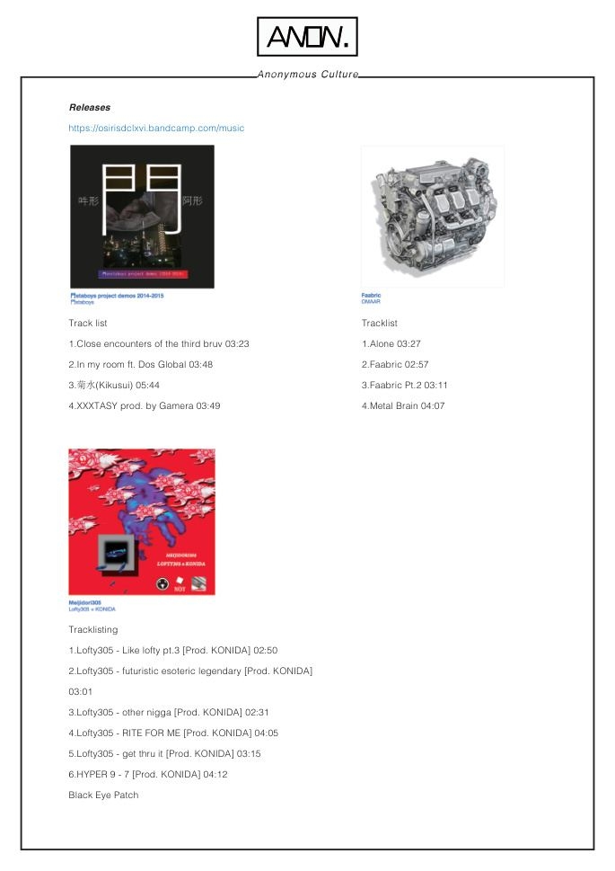
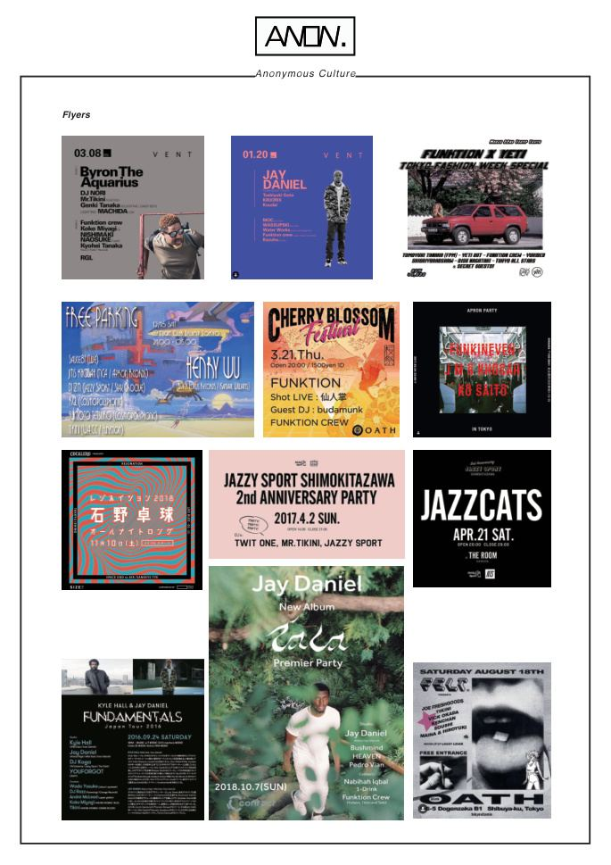

RECORDS / OSIRIS DCLXVI
Independent releases
Music and collaborative projects collected through the Osiris DCLXVI catalogue.
EXPLORE BANDCAMP ↗INDEPENDENT CREATIVE / TOKYO, JAPAN
Mr Tikini is the creative identity of Darren James Okot — a London-born, Tokyo-based DJ, artist, event producer and cultural connector working across music, nightlife, fashion and brand culture.
 TOKYO — ONGOING
TOKYO — ONGOING
Born and raised in London, Darren has been based in Tokyo for more than a decade, building a practice that connects underground music, street culture, nightlife and creative business.
His path runs through the DJ duo Spexsavers, the early internet radio project Outtanet, Japan Visionary Broadcasting (JVB), the Osiris DCLXVI imprint and the Water Works party at Koara. His current focus includes Funktion, a weekly Thursday gathering at Oath in Shibuya, rooted in the broad lineage of Black music.
Alongside music and events, his work spans creative consulting, brand development, digital marketing, cultural production and modelling.
DJ projects, independent releases and dancefloor communities shaped between London and Tokyo.

Music and collaborative projects collected through the Osiris DCLXVI catalogue.
EXPLORE BANDCAMP ↗
Recorded mixes and radio appearances documenting a wide-ranging musical approach.
LISTEN ON MIXCLOUD ↗
Event production and dancefloor culture, from Water Works at Koara to Funktion at Oath, Shibuya.
VIEW CREATIVE WORK ↘Creative direction, brand storytelling, event production, collaborations and fashion work.



Selected portfolio pages are reproduced from the supplied Mr Tikini portfolio. Individual project credits and image rights should be confirmed before adding expanded captions or commercial case studies.
VIEW ADDITIONAL PORTFOLIO PAGE ↗DARREN JAMES OKOT
International automotive sales, business development, digital marketing and cross-cultural communications — supported by a multidisciplinary career in Tokyo.
International automotive sales and marketing professional with a background spanning B2B/B2C sales, business development, digital marketing, branding and cross-cultural communication. Experienced in sourcing Japanese vehicles through auction, developing overseas customers, negotiating sales and supporting international vehicle transactions.
Diner K.K. · WO Bikes / Cartel Bikes · Tokyo
Sales and marketing work across Diner's WO Bikes and Cartel Bikes business, alongside customer development and commercial communications.JPC · Tokyo
Temporary assignment.Tokyo
Brand content and digital strategy; cultural shoots and video for clients including VICE and Hypebeast; event production and B2B outreach strategy.Cartel Bikes (Diner K.K.) · Tokyo
Brand and digital growth; Instagram audience development; influencer campaigns, overseas brand sourcing and local launches.First to Market K.K. · Tokyo
Brand localisation, exhibitions, PR events and retail partnerships.Pantone View / VIEW2 Magazine
Global colour and culture forecasts focused on Tokyo streetwear and lifestyle.Interac / Cosmos / English Village / Transworld · Tokyo
Admark Japan · Tokyo
Luxury and FMCG recruitment, client relationships and new-business development.City University of London
B.Eng, Media Communication Systems · 2005
UK Driving Licence · TOEIC 850
Native English · Business-level Japanese
Tokyo, Japan
London-born · British
Professional details transcribed from the supplied 2026 CV. The source CV includes direct contact details; they are intentionally kept in the Contact section below rather than repeated here.
For bookings, creative collaborations, brand projects and professional enquiries.